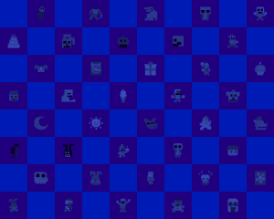
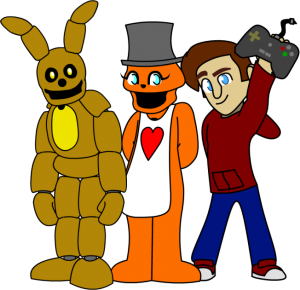

If you see any issues, please do make us aware via our Contact Form.
Thank you for browsing FNaFLore.com, we hope you enjoy the improvements that are coming to the site!
It was horrible. :c

The Five Frights at FNaFLore Fiasco
Hello all.
I feel I need to answer in depth and fully for what happened last Saturday.
Last Saturday, we had the Five Frights at FNaFLore event scheduled. It was an ingenious concept with a great plot. But it fell apart a week prior, and last Saturday, disintegrated completely.
I’m going to first address the premise of the event, the main issues with the first delay, then the cancellation, then future content to celebrate future landmarks.
The Event Plan
the event was going to be simple and brilliant.
I would be dressed as the FNaFLore Fleshmonger – the character seen on the site during Halloween. I would be playing a game in which I was to hunt and kill the Freddit admins.
This is especially brilliant as it played into the whole FNaFLore&Community vs Basetown&Freddit moderators incident we had a while back, causing a leadership shuffle and the appointment of some of the best mods we’ve seen for Freddit in months.
From that, people presume that our two sites hate each other. This is actually not the case. I’ve only gone against them when the community has voiced their concerns, which have gone unanswered. I worked with Invaderzz to help deal with the MemeMachine hack, in which I helped him shut down the subreddit temporarily. I showed him how to do so, and offered my help, temporarily postponing the article I was writing.
During future bouts of attacks, I’ve also offered them my LeakedSource account I’ve purchased for that specific hack, to ensure I don’t get hacked. I did this so their community didn’t get torn down by an insecure admin account.
I’ve worked with them, and I harbour no grudges. Listen to the community, and you’re fine by me. Even if it’s something I disagree with, I only want the community to be heard, not ignored. It’s my pet peeve of moderation – something I’ll talk about later.
Point is, I’ve actively worked with, and keep constant contact with, the Freddit moderation team. They’re doing a fine job, and here’s hoping this year, the subreddit gets even more changes and events to satiate the sadly declining fanbase.
But back to the point, it played off well. I was proud of the concept.
The rough plan was this. I am notoriously camera shy, unless I wear a costume of sorts. So, I dreamed up this Fleshmonger character, had a good friend help me make the fur mask and arms, and invested in trying to get a rudimentary lighting rig set up to imitate the swirling in the main visor.
I would then, dressed as the FNaFLore Fleshmonger, systematically try to kill the moderators in a series of games of Dead by Daylight, as they worked in a team to outwit and evade me.
There was a threadbare plot. In essence, this cursed cube, an actual prop I have from my old deceased chinchilla, Kizzy, was actually a cursed object, and that touching it put you under the influence of this Eldritch demon, like the Idol from The Chzo Mythos. The lore was sort of a loveletter to that game, which doesn’t receive nearly as much attention as it should, despite it being an old game. As time went on, sadly, this lore got less and less relevant.
The opening would have been the Fleshmonger jolting to life, the lights in the visor turning on and flickering between red and green as they swirled.
Then the games would begin. I would hunt the players, they would evade. For every $500, I would add a perk, add on or offering. These would up the difficulty of the game for the mod team. That also sadly fell through, as the devs never got back to me over helping me.
Audio wise, I despise my voice. Not quite as much as my appearance, but still, it’s bad. I’ve been told I sound a lot like Afton, or some 40 year old English uncle.
I’m just 23. It is not a compliment to sound like a fictional child killer.
The plan was, just make killer noises. Deep laughs, growls, snarls, perhaps the occasional whisper of “help me”, to indicate the Fleshmonger character is still conscious of what is happening around them, much like the Headcrab Zombies of Half Life, who plead for help in their screams.
In the event Scott had even donated – something I was not sure would happen, given our history – I tried to set up some form of specific recognition. I retrieved a Halloween prop from our loft. A severed foot. I put it and a Fredbear toy into a bin bag filled with old duvets that was to be next to me, which would be pierced by the machete weapon of the Fleshmonger. The basic idea being, it is implied that the bag holds a body inside it.
Had he joined in with the event or donated, I was to go into the bag, toss the Fredbear plush across the room, and grab the severed foot lying at the top. I would have then used the exposed ankle-bone end to smear a red smile across the welding mask, with a discrete crayon I had attached to the foot as a crude and similar colour to blood. I would have been genuinely happy if Scott had enjoyed the stream’ and while I could not talk, I hoped that action would at least convey that I was happy he was enjoying the event. I don’t wish any harm on the man, far from it. I would have just been happy that I could have entertained him. Besides any past critique or concerns, I genuinely do hope he goes far, and still look forward to future games.
Towards the middle, there was a break. The break video was probably the most professional thing I have probably ever done for the site. It came out really well. For posterity, here is the near-final version of the break video I had planned. I realised I had forgotten the music behind it, and sadly, DAGames didn’t get back to me there either. If I had proper contact with him, I’d have asked for permission to use/loop his song “Unfixable” – a song that does co-inside with the character a bit.
The preview above uses the “Unfixable” instrumental from Prince Ghast’s video, which features a slightly edited version of Juicestain’s Recreation. Of course, both of these are fan-made instrumentals of DAGames’ “Unfixable” music video.
Once the break was over, I would go back at it. After 3 more hours, we would hit the end of the stream. The end, I planned, would have an unknown force break into the room. The Fleshmonger would try to confront it, but is repelled by the attacker, smashing into the sofa he was just sat at playing. In a renewed bout of strength, the Fleshmonger would lunge again.
The scene would have ended with the camera suddenly being knocked over, and on the ground. The door behind me would be open, and through some editing, would have an unannounced character there. The Fleshmonger would be seen on the floor, crawling and grasping for the cursed cube, the source of his power. This unannounced entity would retrieve the cube, whic in doing so, would cause a flash of light, and the fleshmonger’s body would be human again, in the same position as where he had grasped for the cube.
The entity would have pondered over the cube, until noticing the camera. At which point, he would have ordered the attacker to destroy the camera. the attacker would pick up the camera in a jumpscare fashion, the camera would glitch, and it would cut/fade to static.
That would have marked the end of the event, and I would have written a summary post over how it went well, and what were the challenges. That was the basic guideline I had in mind.
This event was going to happen. I had every intent to go forward with it. But the combination of guest issues, production issues and the logistics of streaming made the event so unworkable, it was for the best to cancel it, and replan a charity push for the next time.
The First Delay
The first delay was down to issues getting guests, issues with the costume and issues with organisation. None of us had prepared to actually play the game, let alone stream it.

The first go would have had Momerator and Invaderzz, but he could only be there half the time. Invaderzz somehow reached out to Dawko, who said he could pitch in an hour.The other moderators were either unable to run the game, unable to attend or didn’t feel comfortable to join in.
In essence’ we had 1 2/3 of the survivors we would need to play a game in the first run. Just on that, we had to cancel.
However, on costume, I also had issues. I could not show my face due to my camera shyness, so that was a necessity. The mask had come, but it was not sewn correctly. The front part of the face was tiny dute to a miscommunication issue. This meant I could not put it on, and worse, I could not breathe in it.
Further, the electronics in the mask were failing. We just couldn’t get the lights to react to the dimmer and colour switcher we attached it to.
On top of that, as these had both not been ready, I couldn’t pre-film the intro and outro to my stream. That was essential to ensuring any plot was even remotely in place. Due to the terrible timing of all of this, we delayed it by a week. I renewed efforts to fix the welding mask, and sent the chinchilla head back to the friend who had designed it for me.
The Cancellation
The second time around was not much better. Further issues occurred in getting guests, issues persisted with the costume, and organisation was perhaps even worse.
The second go, we had Momerator and Invaderzz. However, Momerator’s PC had blown up on the day. In her attempts to fix it, she had thrown together a backup rig from spare parts. This rig also failed, meaning it would take 3 hours to begin streaming – halfway through the event. Invaderzz had to go away for a bit, but then returned. He was prepared in the end. We had again invited Dawko, who I heard had accepted. However, we had no significant contact to him just 20 minutes from the event, beyond our link with Invaderzz. On top of that, we had no fourth guest accepted, even if we did go ahead. The game would be lacking a player.
Meanwhile, I was panicking just as much. I had sent and re-received the costume, but there had been significant delays, which had led to a severely limited pre-filming time. I only received the headpiece the day before the event, and even then, I could not film, as there were flaws to do with my ability to breathe, which led to me having to cut out the face of the mask. I was recording the intro and outro scenes just 1 1/2 hours from launch, trying to get it sorted. To add to the issues, the hands were unable to grip anything whatsoever, meaning that I was unable to do the most basic of actions on the keyboard.
The videos were not of a professional standard. It seems they were recorded at 640px, and the “acting” was atrocious. I could never publish them. Further, the lighting was too bright, and did not reflect the vibe of the sinister empty room I was filming in. To add, the organisation of the web page was not complete, and nor was the integration with Tiltify.

Just after the issues, Invaderzz was unavailable. This meant that, just a half hour into the stream, we’d possibly only be down to 2 people. Myself and Dawko. If we were even lucky enough to get to that point, which we weren’t. At that point, this wouldn’t have even been a Freddit vs FNaFLore event in any aspect, as all the moderators were gone.Not that I wish to snub Dawko. I’ve always viewed him as a great guy. I hear he was frustrated at the cancellation, and I can only apologise. I also know he is going through a difficult time right after the stream, to which I can only wish him the best, and offer to talk at any point. I fully understand his situation, and have been through it myself.
In any case, the event simply could not work at the end of it all. It could perhaps have been a gameplay-only event, but even then, that likely would just be boring to viewers. Far less exciting than enticing a perceived rivalry between myself and Freddit. Plus, with Invaderzz and Momerator gone, it’d not have enough players to get off the ground in time, or to even last for 6 hours.
Momerator tried to get something else in place, which I want to give her credit for. She tried to get some sort of game stream in place for FNaFLore. But at that point, frankly, it was too late. Particularly for morale. I felt like I was hit by a truck, and was bleeding out on the sidewalk. At that point, you don’t want to do much, other than curl up and recover best you can. You don’t even think about how could you cobble together something to replace it. I failed, end of story. I can only try to shake it off, and plan for the next big thing.
Despite the other factors, I take this failing on my own shoulders. I should have prepared backups and safety nets, just in case. Every issue that came up, I should have prepared for. I take full responsibility for this event bombing as badly as it did.
Future Charity Events
It’s patently clear that livestreams for FNaFLore will not happen. Not now, and probably not ever. At least, not from me.
But, I still want to do something to celebrate the birthday and milestones of the site, while hoping the work gone into it entices people to donate to a worthy and humble cause.
That’s why I have a backup plan up my sleeve. Something I know I can deliver on. Over the last year, I have been experimenting with PHP and Javascript programming. I’ve actually created a full faithful recreation of the FNaF1 camera system, with adjustable AI. I had planned to put it on the site as a sort of camera simulation, as if you had hacked into the Fazbear security and could view the camera system. But, I do not know if that would be legally sound. It was up briefly, but that page was taken down some time ago. I will need to ask Scott about that at some point. I fear he will not wish to have a full simulation of the FNaF camera systems (minus the actual gameplay) up on the site. That could be a tad too far. I’m going to do the fangame versions first before returning to FNaF’s systems.
Non-the-less, I’ve been working on games for the site. Just a side project.
But, with the failure of this stream, I’ve thought about it. I feel I could try to turn those games into something more.
I will not announce any details, but the entire community feature of the site is getting overhauled. I plan to involve many more people with this site. This could range from text stories, fan theories (potentially analysis of them for plotholes, too) and more.
One of the community features is the Arcade, which will feature a variety of web-based games. Upon thought, perhaps, I should have each game sponsor a different charity. The FNaFLore Charity Arcade. That seems much more doable, and much more exciting than seeing a silly fool bumble around on camera. I like the idea of a FNaFLore Charity Arcade.
Special Thanks
They didn’t get a mention as the event didn’t go ahead, but I feel I would like to thank several people who truly tried to make the event work.
I’d like to thank my FNaFLore Discord Moderators for their help. Kenan, JuniorGenius, Momerator, Retroity and Wholigan. They were going to moderate the chat, and resize/update the fanart and top 5 donor list.
For the participants, I’d like to thank the Freddit moderator team for their willingness to take part, as well as Dawko, who was going to jump in as well. Also Wholigan, who I believe was going to join us
For artwork, I’d like to thank F-N-A-F-G-Y-F-R, for the moderator sprites and for the Fleshmonger art. I’d also, naturally, like to thank Scott Cawthon for the FNaF sprites that would be used in the break video.
 For the costume, I’d like to thank Lousedog who did create the entire mask. They put their heart and soul into making it, and I’d like to thank them for getting it sorted. Their DeviantArt is Here! They also created this lovely piece of fan art.
For the costume, I’d like to thank Lousedog who did create the entire mask. They put their heart and soul into making it, and I’d like to thank them for getting it sorted. Their DeviantArt is Here! They also created this lovely piece of fan art.
For the mask electronics, I’d like to thank /r/diyelectronics and /r/arduino.
Specifically:
- /u/ThePancakeChair (Main Electronic Design)
- /u/Hello_Mouse (Electronics help/Refining)
- My father (Soldering/Putting the thing together)
- /u/truetofiction (Main Programming)
- JuniorGenius (Programming Refining and Fixing)
- /u/mantrap2 and /u/suthrnwoodwerkinnerd (Programming tips)
 |
 |
For audio and video resources, I’d like to thank Kenan, footageisland and Freesound.org.
For the theme of the event, I’d like to once again thank Yahtzee Croshaw, specifically shouting out his Chzo Mythos series of games! They’re a great little series, and I still highly recommend them.
Finally, of course, I’d like to thank the community for their patience, and once again, apologise. I let you all down here. We had since October to make this work, and it couldn’t get sorted on time.
I’m sorry, and I will not be pursuing this sort of event again. It’s clear it’s not going to happen. I will keep the Fleshmonger on hand, though. Perhaps I can still wrangle something from that character’s dissecting corpse. Perhaps use him in the arcade, in any meta games I develop
Expect the Popgoes subsite soon, though! That’s next on the list.
Kizzycocoa – Owner and designer of FNaFLore.com